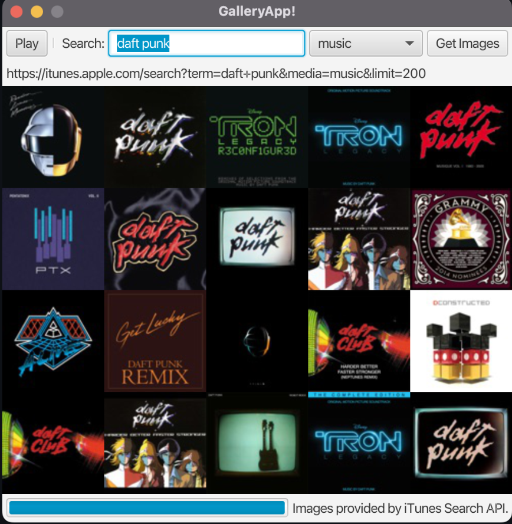
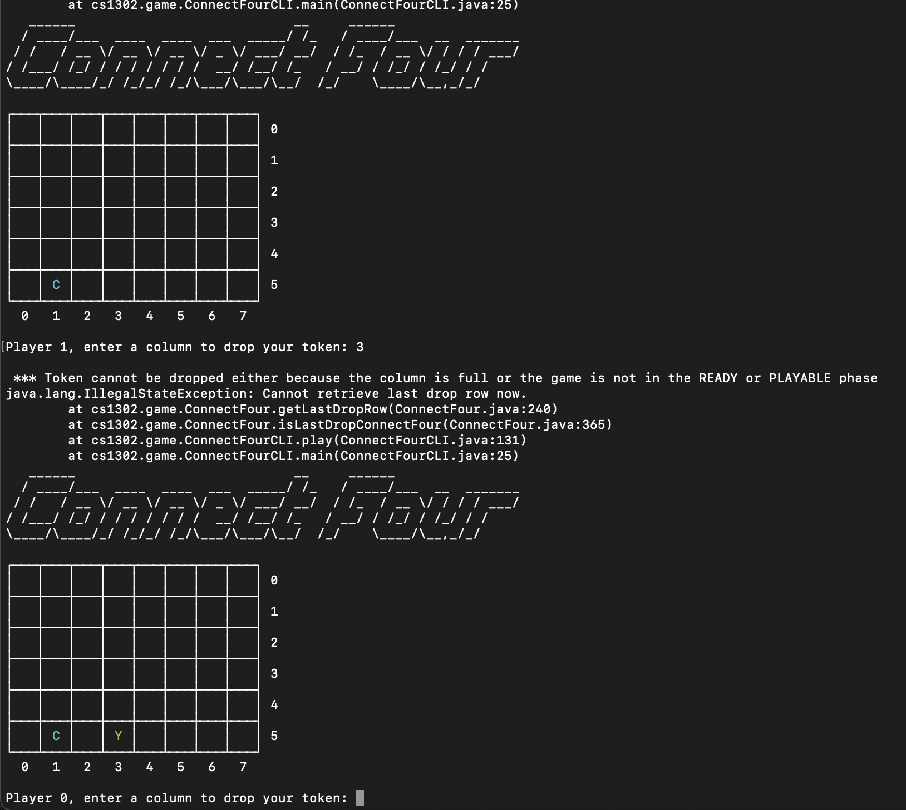

Education
- University of Georgia
- Bachelor of Science in Computer Science, Minor in Astrophysics
- GPA
- 3.34
- Graduation Date
- Expected May 2027
More info available on my LinkedIn.
Honors and Awards
- N/A
- Not Eligible for Scholarships
Check out my GitHub for projects.
Experience
- Undergraduate Research Assistant – University of Georgia
- Aug 2024 – Dec 2024
- Used analysis software such as ANSYS and Thermal Desktop to develop theoretical scenarios for spacecraft components performing reentry.
- Developed a complete simulation of spacecraft heat transfer and thermal radiation patterns upon reentry using the analysis tools.
- Assisted in processing and interpreting remote sensing data to evaluate spacecraft performance.
Read more about this work on my LinkedIn.
Technical Skills
- Java, JavaFX, JavaScript, Python
- Maven, Git, GitHub
- Linux/Unix, Bash scripting
Code samples are available on my GitHub.
Projects
API App
- Developed an application using JavaScript for both backend logic and user interface.
- Integrated two different APIs into one working application and made them dependent on each other.
- Gained hands-on experience with Github and utilized version control workflows efficiently.
See code on GitHub.
Connect Four
- Implemented a fully functional Connect Four game in Java with a command-line interface, handling core gameplay mechanics, win detection, and player input validation.
- Applied object-oriented design principles by structuring the game into modular classes (ConnectFour, ConnectFourCLI, ConnectFourTester) and integrating external libraries for reusable utilities.
- Developed and tested interactive gameplay features such as turn-based logic, custom game phases, and ASCII-based board visualization, improving debugging and user experience.
Read more on my GitHub.
Personal Portfolio Website
- Designed and developed a responsive personal portfolio website using semantic HTML5, CSS3, and JavaScript to showcase projects and experience.
- Implemented structured resume sections with dynamic project cards and integrated external links (GitHub, LinkedIn) for professional branding.
- Ensured web accessibility and W3C standards compliance, resulting in clean, valid, and maintainable code.
Live demo available here.